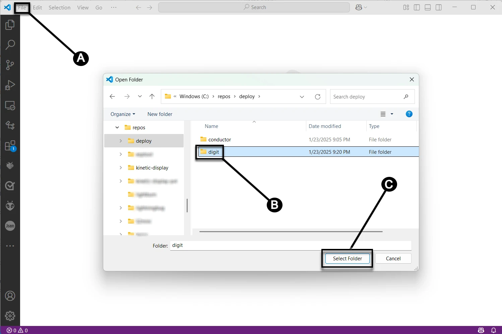
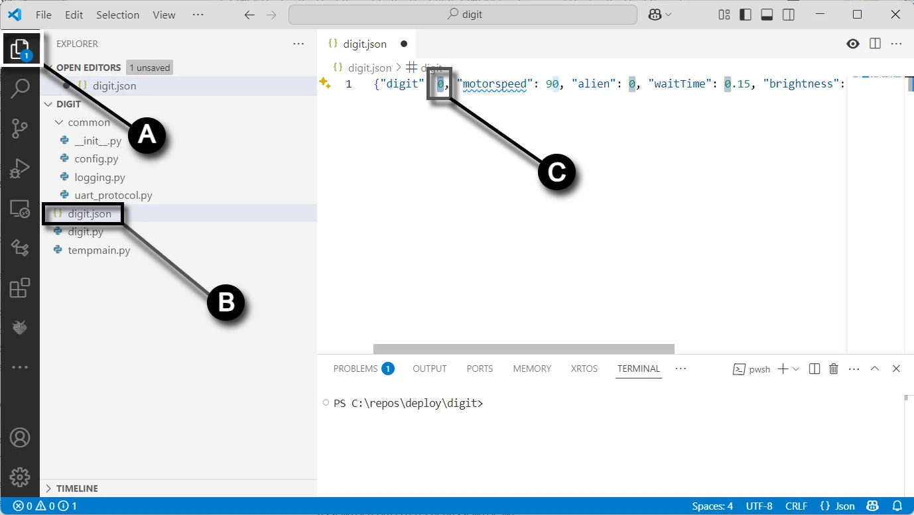

Deploy the Digit Project to the Digit PCB¶
In this section you will upload code to your Raspberry Pi Pico 2040 from your computer.
Prerequisites¶
- Completed the assembly and soldering of the Digit PCB
- Created a fork of the Kinetic-Display GitHub repository, see Software and Microcontroller Preparation
- Deployed the digit directory, also see Software and Microcontroller Preparation
Configure and Deploy the Digit Project¶
- Connect your Computer to the digit PCB Pico per the instructions on Verify Micropython on your Raspberry Pi Pico
- Following the screen capture below from VS Code, select (A) File->Open Folder..., (B) open the deploy/digit folder you deployed during step 4 in the section Fork and Clone the Repository, then (C) click the "Select Folder" button. 
- Following the screen capture below, select the Explorer icon (A) in the left Activity bar. Click the digit.json file (B) in the Explorer pane. Change the "digit": value (C) to match the PCB labelled number 0-3. Don't forget to save the file after changing the value.
Warning
It is very important to have the digit value in the digit.json file match the PCB's labelled value.

4. Following the screen capture below, create a new terminal by (A) clicking the elipse ..., then (B) Terminal->New Terminal submenu.
 5. Connect your computer's USB port to a Digit's Raspberry Pi Pico. Following the screen capture below, (A) select the drop-down menu in the terminal pane, then (B) click the MicroPico vREPL submenu item.
5. Connect your computer's USB port to a Digit's Raspberry Pi Pico. Following the screen capture below, (A) select the drop-down menu in the terminal pane, then (B) click the MicroPico vREPL submenu item.
 6. Following the screen capture below, click All Commands (A) on the status bar. In the Command text field (B), type "Upload" after "> MicroPico: ", then select the dropdown MicroPico: Upload project to Pico.
6. Following the screen capture below, click All Commands (A) on the status bar. In the Command text field (B), type "Upload" after "> MicroPico: ", then select the dropdown MicroPico: Upload project to Pico.

Congratulations on successfully uploading the code to the Digit's Raspberry Pi Pico!